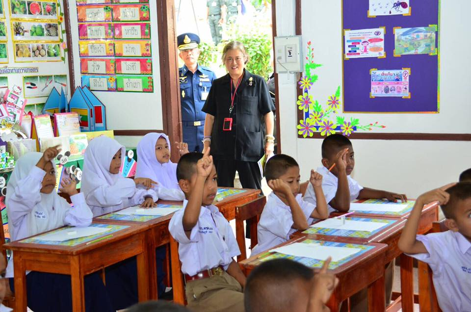
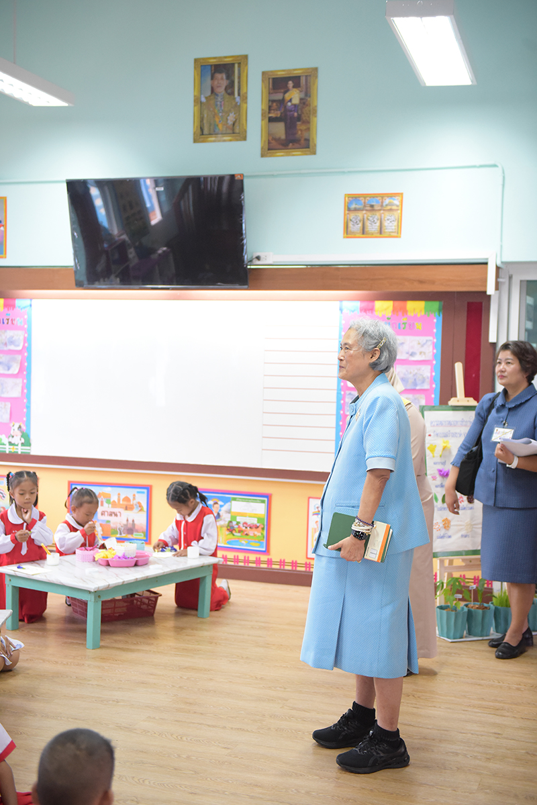
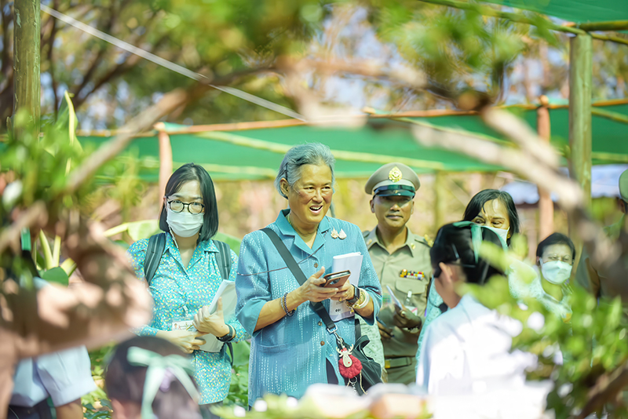
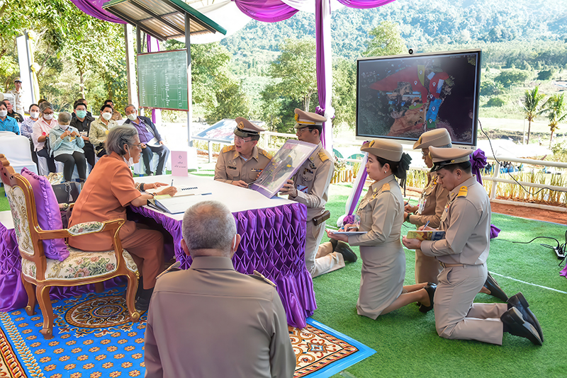

hero_vertical.jpg
ขนาดแนะนำ: 600 x 850 px (แนวตั้งเดี่ยว)

“…งานที่ทำนั้น ถ้าเรียกโดยสรุปตามภาษาสมัยใหม่เขาเรียกว่าการพัฒนาทรัพยากรมนุษย์ แต่ที่จริงก็คือ ให้คนทั้งหลายได้มีโอกาสเจริญเติบโต มีชีวิตที่มีสุขภาพแข็งแรงทั้งร่างกาย และจิตใจ ได้รับการศึกษา ฝึกอบรมสั่งสอนเพื่อให้มีความรู้ และ พัฒนาความสามารถ ทั้งคุณงามความดีที่จะปฏิบัติงาน เป็นประโยชน์ต่อตัวเอง ต่อญาติพี่น้อง ครอบครัว และต่อสังคม ตลอดจนถึงประเทศชาติหรือทั้งโลก ถือว่านี่คือการพัฒนาทรัพยากรมนุษย์ …”
พระราชดำรัสในโอกาสที่คณะผู้ปฏิบัติงานโครงการตามพระราชดำริ เข้าเฝ้าฯณ ศาลาดุสิตดาลัย สวนจิตรลดา กรุงเทพมหานคร
วันอังคารที่ ๒๖ เมษายน พ.ศ. ๒๕๔๘
ทรงมีพระราชปณิธานในการพัฒนาชุมชนให้มีความเข้มแข็งและยั่งยืนโดยริเริ่ม โครงการพัฒนาที่สนับสนุนให้ประชาชนสามารถพึ่งพาตนเองและมีโอกาสเติบโตก้าวหน้า ให้ความรู้ สร้างโอกาส สร้างอาชีพ ทั้งในด้านการเกษตรและด้านศิลปวัฒนธรรม พัฒนาทักษะในการเรียนรู้ ลงมือทำ อนุรักษ์ และสร้างสรรค์สิ่งใหม่
p1_left.jpg
ขนาดแนะนำ: 540 x 340 px

p1_right.jpg
ขนาดแนะนำ: 540 x 340 px

“ภาวะทุพโภชนาการ” คือปัญหาของสังคมชนบท เด็กที่ร่างกายไม่แข็งแรงทำให้จิตใจและสติปัญญาไม่พร้อมที่จะศึกษาเล่าเรียน ขาดโอกาสในการพัฒนาความรู้ ความสามารถ ใน พ.ศ. ๒๕๒๓ ได้ทรงเริ่มงานพัฒนาเด็กและเยาวชนด้วยการทดลองในโรงเรียนตำรวจตระเวนชายแดน ในชื่อ “โครงการอาหารกลางวันผักสวนครัว” ขยายผล เป็น “โครงการเกษตรเพื่ออาหารกลางวัน” และเป็น “โครงการส่งเสริมพัฒนาการเด็กปฐมวัยในพื้นที่ทุรกันดาร” เพื่อพัฒนาเด็กเล็กอย่างรอบด้าน มีโครงการควบคุมโรคขาดสารไอโอดีนเพื่อลดจำนวนผู้ป่วยโรคคอพอก และโรคเอ๋อ อีกทั้งพระราชทานบริการทางการแพทย์และทันตกรรมโดยจัดให้มีหน่วย “แพทย์พระราชทาน” ตามเสด็จพระราชดำเนินทุกครั้ง และสนับสนุนค่าใช้จ่ายในการรักษาพยาบาลให้ประชาชนที่ขาดแคลน
p2_left.jpg
ขนาดแนะนำ: 540 x 340 px

p2_right.jpg
ขนาดแนะนำ: 540 x 340 px

“...การศึกษาไม่เพียงแต่ต้องส่งเสริมความรู้เท่านั้น แต่ยังต้องส่งเสริมให้เด็กและ เยาวชนมีทักษะชีวิตที่สามารถปรับตัวในโลกที่มีการเปลี่ยนแปลงได้อย่างรวดเร็ว การเรียนรู้ต้องสอดคล้องกับความต้องการของสังคมและโลกในอนาคต...”
พระราชดำรัสในการประชุมวิชาการทางการศึกษาแห่งชาติ
วันจันทร์ที่ ๙ ธันวาคม ๒๕๖๒
ณ ศูนย์ประชุมแห่งชาติสิริกิติ์ กรุงเทพมหานคร
p3_left.jpg
ขนาดแนะนำ: 540 x 340 px

p3_right.jpg
ขนาดแนะนำ: 540 x 340 px

p4_left.jpg
ขนาดแนะนำ: 540 x 340 px

p4_right.jpg
ขนาดแนะนำ: 540 x 340 px

ทรงปฏิบัติพระองค์เป็นแบบอย่างให้เห็นถึงความสำคัญของการพัฒนาตนเองเพื่อให้มีความสามารถที่จะเป็นประโยชน์ต่อสังคม ทรงมุ่งมั่นศึกษาและพัฒนาตนเองอยู่เสมอ แม้จะสำเร็จการศึกษาระดับปริญญาตรีและปริญญาโทในหลายสาขาวิชาแล้ว พระองค์ก็ยังทรงศึกษาต่อทั้งในและต่างประเทศ เรียนรู้ภาษา ศิลปะ และวิชาการหลายด้านซึ่งจะเป็นประโยชน์ต่อประชาชนและประเทศชาติอย่างต่อเนื่อง เป็นแรงบันดาลใจให้ประชาชนไทยทุกคนมีความรับผิดชอบต่อตนเองและส่วนรวม
p5_left.jpg
ขนาดแนะนำ: 540 x 340 px

p5_right.jpg
ขนาดแนะนำ: 540 x 340 px
